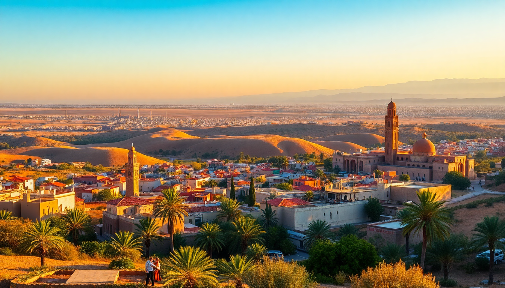

Best Cities in Morocco: Marrakech, Fes, Chefchaouen & Essaouira

I spent two weeks bouncing between these four cities, and the differences hit me harder than I expected. Marrakech is a sensory overload in the best way. Fes feels like a living museum where you can actually get lost. Chefchaouen is a blue-washed pause button. Essaouira is the coastal exhale you didn’t know you needed. Here’s how to plan your route, what’s worth your time, and what I’d skip next trip.
Why visit Marrakech first?
Marrakech is the loudest welcome you’ll get in Morocco, and I mean that literally. The call to prayer, moped horns, and market haggling hit you all at once. It’s chaotic, but that’s the point. I landed here to get acclimated before heading north.
The old city (Medina) is the main draw, but don’t sleep on the newer Gueliz district for decent coffee and quieter evenings.
- Jemaa el-Fnaa — the central square. Go at dusk for food stalls, snake charmers, and orange juice vendors. Expect to be approached constantly.
- Bahia Palace — worth the 70 MAD entry. The tilework and cedar ceilings are stunning, and it’s less crowded early morning.
- Le Jardin Secret — a calm escape inside the Medina. The rooftop café serves good mint tea.
- Riad Farnatchi — where I stayed in the Medina. Quiet courtyard, solid breakfast, and the staff helped me book a guide for the souks.
- Café des Épices — reliable spot for lunch near the spice market. Get the chicken tagine.
Is Fes more authentic than Marrakech?
Short answer: yes, but “authentic” comes with trade-offs. Fes’s Medina is older, narrower, and far less tourist-polished than Marrakech’s. You will get lost. I got lost three times in one afternoon. That’s part of the experience.
The tanneries are the headline attraction, but the real value is wandering the alleys and watching artisans work. Brass, leather, wood — everything is still made by hand here.
- Chouara Tannery — the oldest tannery in Fes. View from the leather shops above. Take the mint sprig they offer; the smell is brutal.
- Al-Attarine Madrasa — small but perfectly preserved. The zellij tile patterns are the best I saw in Morocco.
- Riad Fes Maya — I booked a room here for two nights. The rooftop terrace overlooks the entire Medina.
- Café Clock — good for a break from tagine. They do camel burgers and cooking classes.
- Nejjarine Museum of Wooden Arts & Crafts — overlooked by most tourists. The courtyard alone is worth the 50 MAD entry.
Should you go to Chefchaouen?
Chefchaouen is the most photographed city in Morocco for a reason. Every wall, step, and doorway is painted in shades of blue. It’s small — you can see the main sights in a day — but I’d recommend two nights to slow down.
The vibe here is relaxed. No one hassles you in the streets. The mountain backdrop makes it feel like a different country compared to Marrakech.
- Place Outa el Hammam — the main square. Grab a seat at one of the cafés and watch the sunset hit the blue walls.
- Spanish Mosque — a 30-minute uphill walk from the Medina. The view over the whole city at golden hour is worth the sweat.
- Dar Elrio — I stayed here. Simple rooms, friendly host, and breakfast on the terrace.
- Restaurant Beldi Bab Ssour — the best kefta tagine I ate in Morocco. No menu, just tell them what you want.
- Ras Elma River — a short walk from the Medina. Locals picnic here. Good for a dip if the weather is hot.
Why is Essaouira different from the others?
Essaouira is the coast. The wind is constant, the port smells like fish and salt, and the pace is noticeably slower. After the intensity of Marrakech and the labyrinth of Fes, this felt like a reward.
The city is smaller and easier to navigate. The beach is walkable from the Medina. Seafood is the move here — I ate grilled sardines for dinner three nights in a row.
- Skala de la Ville — the old seafront ramparts. Walk the walls at sunset. The cannons and ocean views are classic photo ops.
- Port of Essaouira — go early to watch fishermen unload. The stalls along the dock grill the catch of the day right in front of you.
- Riad Zahra — budget-friendly riad in the Medina. The owner gave me a hand-drawn map of his favorite street food spots.
- Le Comptoir — a wine bar with a small but solid Moroccan wine list. Good for a change from mint tea.
- Mogador Island — visible from the beach. You can take a boat tour, but I skipped it and just walked the beach instead.
How do you connect these cities?
You can do this loop by bus, train, or private driver. I mixed bus and train. CTM buses are reliable, air-conditioned, and cheap. The train between Marrakech and Fes takes about seven hours and is comfortable enough to nap through.
- Marrakech to Fes — train via Casablanca. Book first-class (Compartiment 1) for reclining seats and fewer people.
- Fes to Chefchaouen — CTM bus, roughly 4 hours. The road winds through the Rif Mountains. Sit on the left side for views.
- Chefchaouen to Essaouira — this is the long leg. I took a CTM bus from Chefchaouen to Marrakech (5 hours), spent a night, then continued to Essaouira the next morning (3 hours by bus).
- Grand Taxi — shared taxis between cities cost more but save time. Negotiate the price before getting in.
FAQ
Is it safe to travel between these cities alone? Yes. I traveled solo as a woman and never felt unsafe on buses or trains. The main hassle is touts in Marrakech and Fes, not actual danger. Keep your bag zipped in crowded medinas and ignore persistent guides.
Which city should I skip if I only have a week? Skip Chefchaouen if you’re short on time. It’s beautiful but remote. Essaouira is a better use of days because it’s easier to reach from Marrakech and offers a completely different vibe (coast vs. mountain).
Do I need a guide in Fes? Not required, but I’d recommend one for the first half-day. The medina is a maze, and a good guide will show you workshops you’d never find alone. I used a guide from Riad Fes Maya for 250 MAD for two hours. Worth it.
Conclusion
- Start in Marrakech for the energy and culture shock, then head to Fes for the deep dive into craft and history.
- Chefchaouen is a two-day detour for photography and quiet mountain air — skip it if you’re tight on time.
- Essaouira is the coastal reset. Spend at least two nights here to decompress and eat grilled fish.
- Connect cities with CTM buses or trains. Book first-class on trains for comfort.
- Stay in riads inside the medinas for the full experience, but pack earplugs for morning calls to prayer.